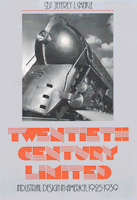

Classic, indispensable introduction to industrial design in the last century
Classic, indispensable introduction to industrial design in the last century


 Classic, indispensable introduction to industrial design in the last century
Classic, indispensable introduction to industrial design in the last century

|  |
Twentieth Century LimitedJeffrey L. Meiklepaper EAN: 978-0-87722-246-0 (ISBN: 0-87722-246-0) |
"Particularly illuminating.... A fresh and insightful view of a period that has been given little due and even less analytical thought."
—Ada Louise Huxtable, The New York Times
In the late 1920s, "streamlined" became the term businessmen used to described new models that were easier to produce as well as those that met with less sales resistance than older products. Illustrating this concept with streamlined objects from soup cans to the Chrysler building, Jeffrey Meikle's classic book, Twentieth Century Limited, celebrates the birth of the industrial design profession from 1925-1939. This second edition includes a new preface and improved photographic reproduction.
Commercial artists who answered the call of business—Walter Dorwin Teague, Norman Bel Geddes, Henry Dreyfuss, and Raymond Loewy the best known among them—were pioneers who envisioned a coherent machine-age environment in which life would be clean, efficient, and harmonious. Working with new materials—chrome, stainless steel, Bakelite plastic—they created a streamlined expressionist style which reflected the desire of the Depression-era public for a frictionless, static society.
Appliances such as Loewy's Coldspot refrigerator "set a new standard" (according to the advertisements), and its usefulness extended to the way it improved the middle-class consumer's taste for sleek new products.
Profusely illustrated with 150 photographs, Twentieth Century Limited pays tribute to the industrial designers and the way they transformed American culture; a generation after its initial publication, this book remains the best introduction to the subject. The new edition will fascinate anyone interested in art, architecture, technology, and American culture of the 1930s.
"Jeffrey Meikle's book stands out by reason of its intelligence, rigor and comprehensiveness.... [His] research is broad, well documented, and his writing is vigorous and concise, with an occasional touch of humor. Well chosen illustrations add persuasiveness to the argument."
—Neil Harris, Reviews in American History
"Jeffrey Meikle's excellent book is a history of American design from 1925.... It will deservedly become essential for the study of its period."
—Cervin Robinson, Art in America
Jeffrey L. Meikle is Professor of American Studies and Art History and Chair of the Department of American Studies at the University of Texas at Austin.
American Studies
History
Art and Photography
American Civilization, edited by Allen F. Davis.
The focus of American Civilization, edited by Allen F. Davis, is American cultural history. In keeping with the interdisciplinary work in this field, which characteristically brings together art history, literary history and theory, and material culture, the titles in this series cover diverse aspects of American experience—from attitudes toward death to twentieth-century design innovations to images of country life in art and letters to trade unions' reliance on religious discourse. The series has been a pioneer in presenting work that uses photographs as historical documents and from its inception has been firmly committed to women's studies. As the first university press series in the field, American Civilization provided the inspiration and the standard for much of the interdisciplinary work developing in the contemporary academy.
© 2015 Temple University. All Rights Reserved. This page: http://www.temple.edu/tempress/titles/179_reg.html.